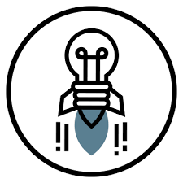

Natalia Reyes Bermudez
Crecer en una empresa que me permita adquirir habilidades tanto para mi desarrollo personal como para mi perfil técnico. Me gusta aprender,por lo que siempre estoy en busca de adquirir nuevas habilidades através de cursos en línea o sumándome a comunidades. Me apasionanlos proyectos que involucran el manejo y la toma de decisiones basadaen datos

Escolaridad
Estudie Ingenieria Industrial en la Facultad de Ingenieria de la UNAM donde aprendí sobre mejora de procesos y administracion de proyectos convine esa mentalidad con mi pasion por la tecnologia para poder participar en proyectos de TI.
Objetivo Profesional
Mi objetivo es trabajar en tecnologias, mis campos de interes son las bases de datos y las tecnologias cloud .

Experiencia
Tengo un año trabajando como analista de datos donde me he enfocado en creacion de bases de datos y limpieza con el lenguaje SQL
Mi historia hacia la tecnologia
Estaba ya en los ultimos semestres de mi carrera cuando decidi que necesitaba conseguir experiencia profesional asi que hice mi CV y me lance a buscar trabajo de lo que fuera, fue assi como cai en una empresa que se dedicaba a hacer paginas web, desde ese momento senti algo en mi que me llamo mucha la atencion, empece a meterme a grupos donde se hblaba sobre temas de tecnologias de la informacion y yo me preguntaba que era todo eso. Fuue hasta el final de mi caarrera que me di cuenta que yo queria estar en proyectos que tuvieran que ver con la tecnologia pero senti que era un poco tarde para tratar de darle otro rumbo a mi trayectoria profesional hasta que empece a ver que habia muchas comunidades que se enfocan a que las mujeres podamos entrar a estos puesto.